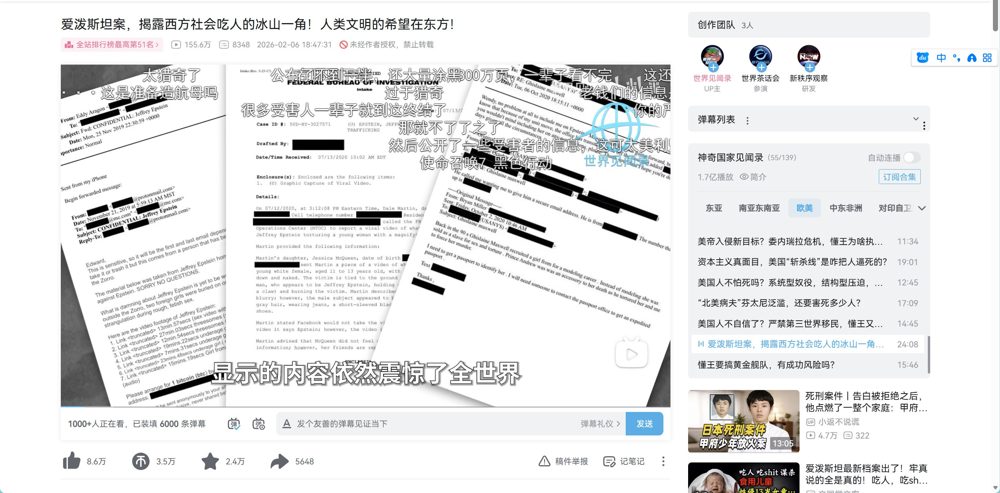

たたなこ
@tatanakots
@bghtnya ugc是有风险的，平台是要推上面想让平台推的东西的
平台做大了就必须要听上面管，小平台上面才可能睁一只眼闭一只眼不管

冰棍好烫喵 🍥🧊🍔🍟🍜🍣🍙🍧🍮🍩☕️💊🤤
@bghtnya
b站现在推送和能过审的都是什么降智傻逼视频？？？
给窝们正常的up主和用户封号全逼走了就是这个目的？
驯化一大批思维扭曲的量产小粉红出来？？
b站彻底变了，早不再是曾经的b站了，而且愈行愈远 https://t.co/DsdoFkd7SX